Introduction to MetaNB
1 Introduction
This vignette provides a step-by-step introduction to the MetaNB package, which implements a trivariate random-effects meta-analysis of prevalence, sensitivity, and specificity, along with associated value-of-information (VOI) metrics for quantifying decision uncertainty. The trivariate random-effects meta-analysis is described in detail in (Wynants et al. 2018), and the associated VOI framework is described in [ref].
The IOTA-ADNEX is a regression model that distinguishes between benign and several types of malignant adnexal masses (Calster et al. 2014). The dataset used in this vignette is from a systematic review of 37 external validation studies of ADNEX (Barreñada et al. 2024), in which sensitivity and specificity were meta-analyzed at the commonly used 10% risk of malignancy threshold.
For illustration purposes, we restrict the dataset to studies in which ADNEX was used with CA125, and refer to this subset as data_ADNEXCA125. The dataset is available in the MetaNB package, and can be loaded using data(data_ADNEXCA125). It contains the numbers of true positives and true negatives, numbers of events and non-events, reported sensitivity and specificity with corresponding confidence intervals, as well as study-level characteristics such as publication, country, sample size, and prevalence.
We use this dataset to illustrate the workflow of running the trivariate meta-analysis, checking convergence, summarizing results, and creating forest plots. We also compare results obtained using different priors and briefly discuss the extension to value of information analysis.
2 Basic workflow
2.1 Running the trivariate random-effects meta-analysis
The trivariate meta-analysis takes the number of true positives (tp), true negatives (tn), the number of events (n_event) and the number of non-events (n_nonevent) as input. A threshold (t) for which true positives and true negatives are defined is also needed to compute the net benefit and related metrics.
MA_NB_tri() fits the Bayesian trivariate random-effects model for prevalence, sensitivity, and specificity described in (Wynants et al. 2018). By default, the model is fitted using weak realistic priors (prior_type = "weak") under the product-normal parameterization using priors specified in (Wynants et al. 2018). For most applications, the default prior settings can safely be used and do not require adjustment. The section on “Weak realistic priors (advanced options)” below provides more details on the implementation of the weak realistic priors and how to modify them if needed.
The argument return_vars controls which parameters are returned. By default, we return the family of net benefit (NB) related quantities (pooledNB, pooledNB_TA, NBnew etc.) and the posterior probability of clinical usefulness (probuseful). Additional quantities can be requested if needed (see ?MA_NB_tri for details (package structure to be added)).
fit <- MA_NB_tri(data = data_ADNEXCA125, # data frame containing the data
tp = tp, tn = tn, n_event = n_event, n_nonevent = n_nonevent, # column names in the data frame for the input data
prior_type = "weak", # type of prior to use, either "weak" or "wishart"
t = 0.1, # threshold for defining true positives and true negatives
return_vars = c("NB", "RU", "probuseful", "sens", "spec", "pooledprev") # variables to return in the output
)Compiling model graph
Resolving undeclared variables
Allocating nodes
Graph information:
Observed stochastic nodes: 111
Unobserved stochastic nodes: 125
Total graph size: 1244
Initializing model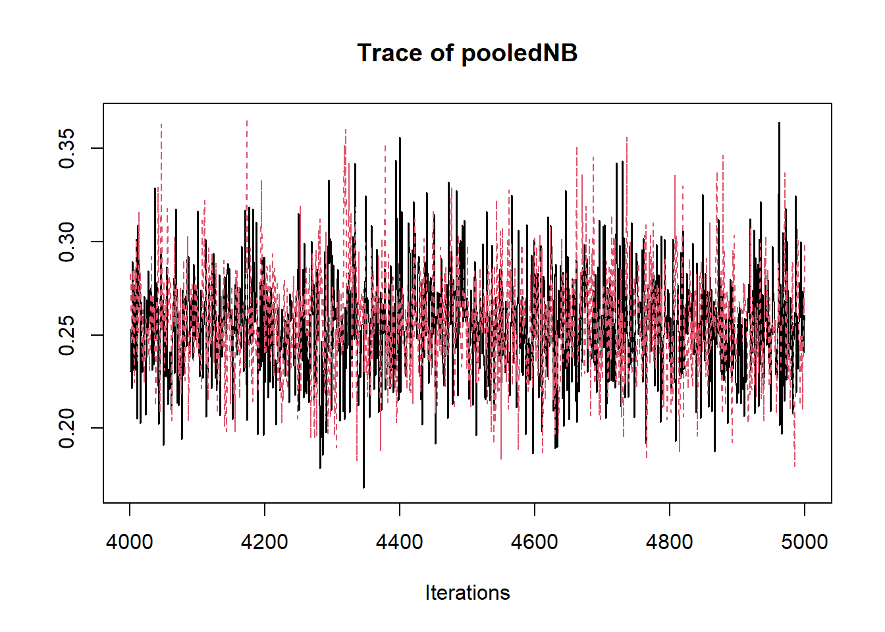
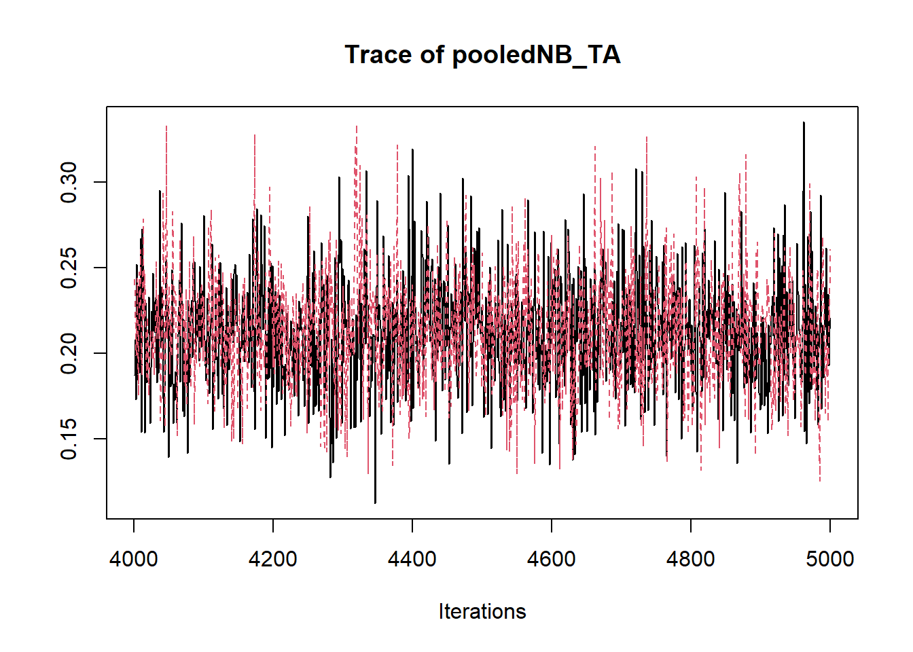
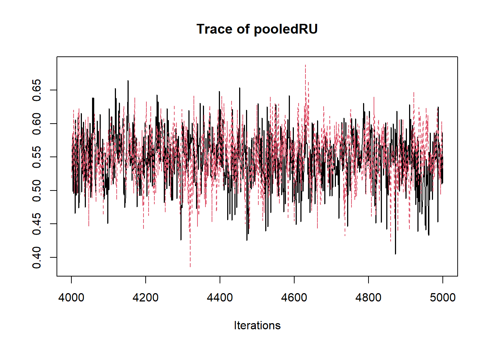
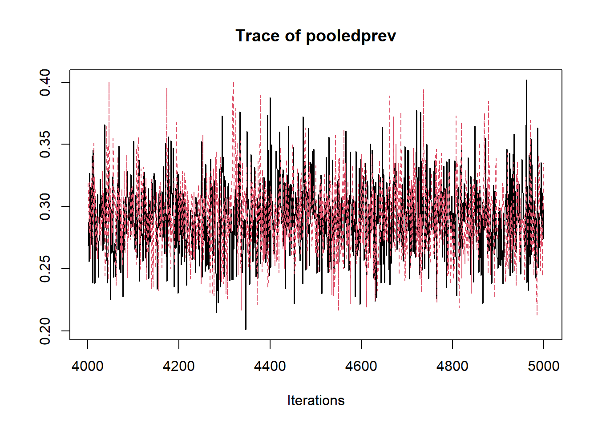
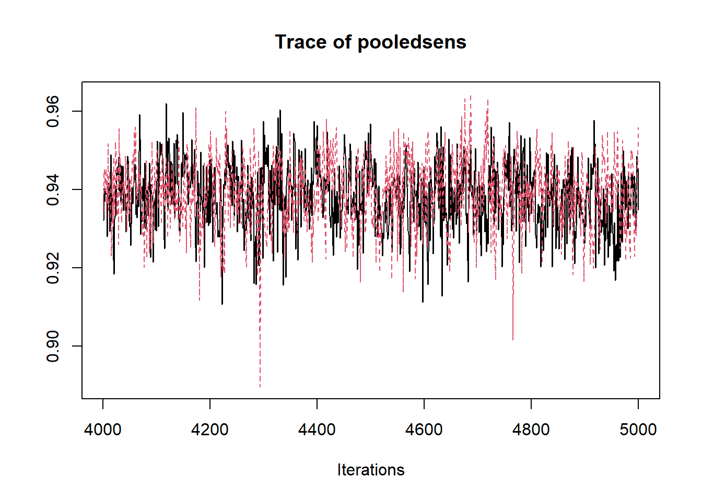
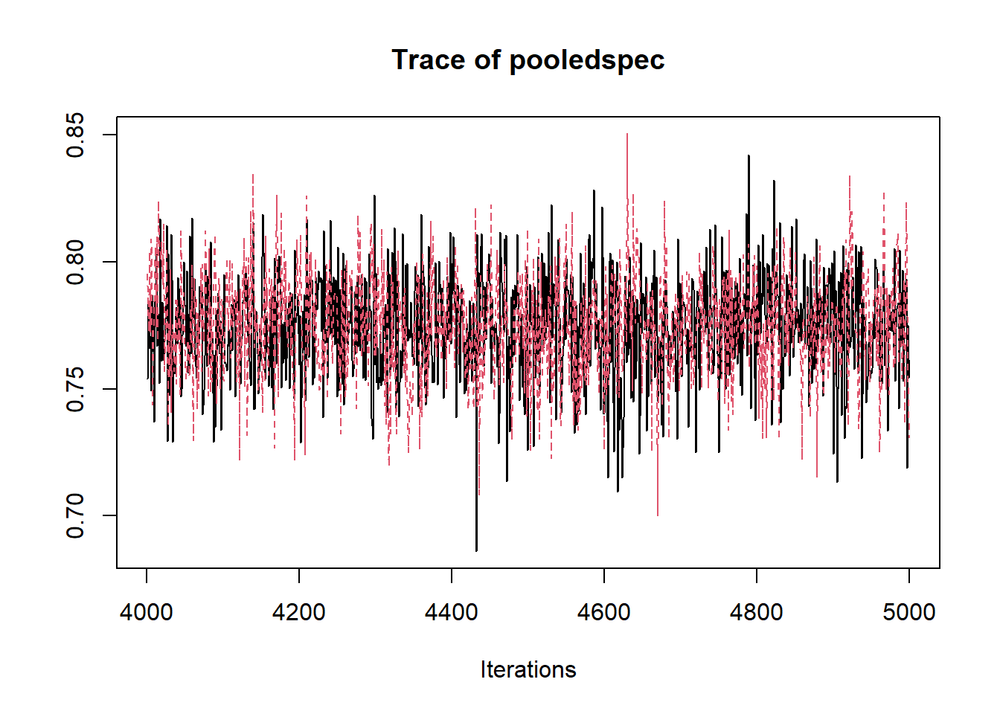
for ppt LUHTAR:
fit <- MA_NB_tri(data = data_ADNEXCA125,
tp = tp, tn = tn, n_event = n_event, n_nonevent = n_nonevent,
prior_type = "weak",
t = 0.1,
return_vars = c("NB", "RU", "probuseful", "sens", "spec", "pooledprev")
)The function can also compute predictive quantities for a new setting. If we have a plausible prevalence for the target setting, we can compute pooled and predictive quantities conditional on that prevalence by supplying prev_known and setting return_known = TRUE (see Wynants et al. (2018), Section 3.3.2).
We can control the MCMC settings through arguments such as the number of chains(n.chains), adaptation iterations (n.adapt), burn-in (burnin), sampling iterations (iter), and thinning(thin). By default, the function runs 2 chains with 1000 iterations each, adaptation iterations of 1000, a burn-in of 3000 and a thinning of 1. After adaptation and burn-in, trace plots of a set of pooled quantities (for example pooledsens, pooledspec, pooledprev, pooledNB, pooledNB_TA, and pooledRU) are shown by default as a rough check. The set of nodes used for these trace plots can be adjusted via diag_vars. After fitting, we perform a formal convergence check on the posterior samples.
2.1.1 Weak realistic priors (advanced options)
Here we briefly describes how the weak realistic priors are implemented in MetaNB. This is mainly relevant if we wish to modify hyperparameters or conduct prior sensitivity analyses.
In our implementation, the logit prevalence is controlled by etap, and the logit sensitivity and specificity are defined through relationships that depend on prevalence:
etapis the logit prevalence (prior:etap ~ dnorm(mu_etap, tau_etap)).lambdasens0andlambdasens1define the logit sensitivity aslambdasens0 + lambdasens1 * logitp.lambdaspec0,lambdaspec1, andlambdaspec2define the logit specificity aslambdaspec0 + lambdaspec1 * logitp + lambdaspec2 * logitsens.
Between-study heterogeneity is represented through variance parameters for prevalence, sensitivity, and specificity (varprev, varsens, varspec), with half-normal priors. Correlations among the three outcomes are represented by corr.sens.spec, corr.spec.prev, and corr.sens.prev. In our specification, two correlations (correlations between logit sensitivity and logit specificity, and between logit specificity and logit prevalence) use Fisher-z normal priors (zss, zsp) and one correlation uses a uniform prior (corr.sens.prev ~ dunif(a_csp, b_csp)).
We can override any subset of these hyperparameters using weak_priors = list(...). Any values not supplied remain at their defaults, which makes it straightforward to run prior sensitivity analyses.
For example, to change only the prior mean and variance for etap (the logit prevalence), we can supply:
MA_NB_tri(data = data_ADNEXCA125,
tp = tp, tn = tn, n_event = n_event, n_nonevent = n_nonevent,
prior_type = "weak",
t = 0.1,
return_vars = c("NB", "RU", "probuseful", "sens", "spec", "pooledprev"),
weak_priors = list(mu_etap = -0.9, tau_etap = 0.001)
)2.2 Convergence check for posteriors
Earlier, we inspected trace plots of a set of pooled quantities during the fitting process as a quick visual diagnostic. After fitting the model and obtaining the posterior samples, we can perform a formal convergence check using the returned MCMC output.
The fitted object contains the posterior samples as a coda::mcmc.list object. We can use the traceplot() function from the coda package to visualize the MCMC chains for selected parameters. The parameters must be included via the return_vars argument when fitting the model. For example, to check the trace plots for the pooled sensitivity, pooled prevalence, pooled specificity, pooled net benefit, pooled net benefit for the treat all strategy, and pooled relative utility, we can run:
traceplot(fit$samples[, c("pooledsens","pooledprev","pooledspec","pooledNB", "pooledNB_TA", "pooledRU")])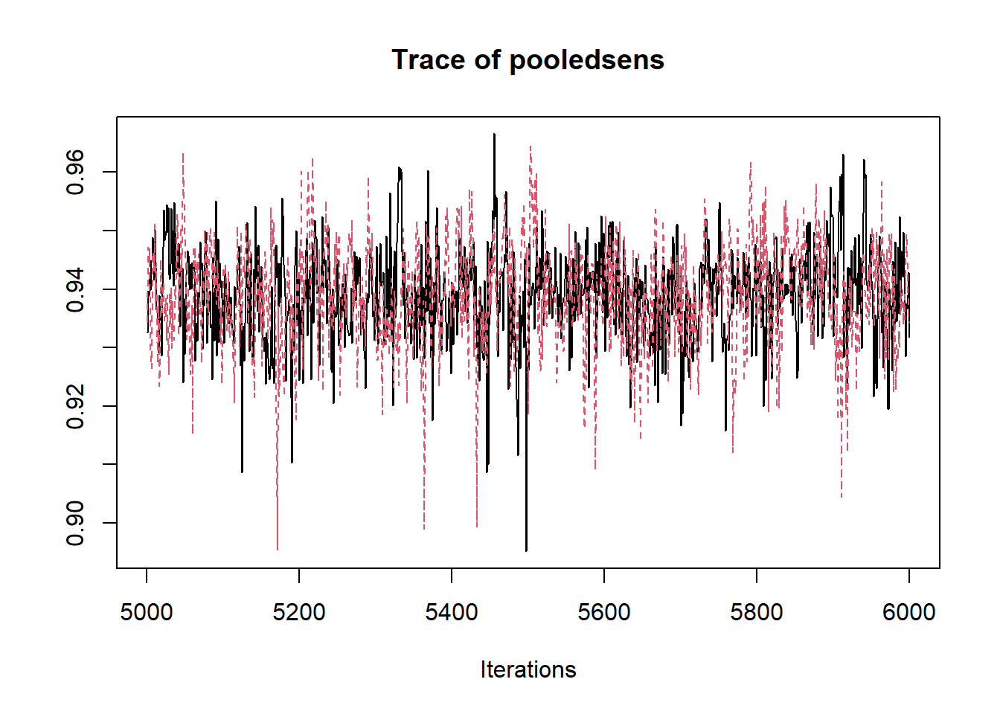
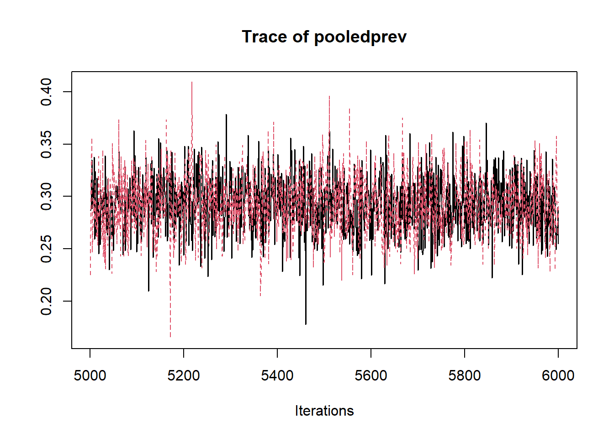
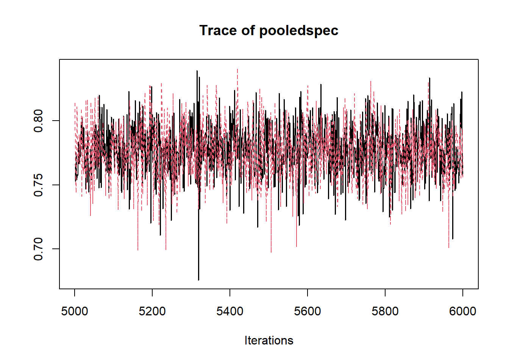
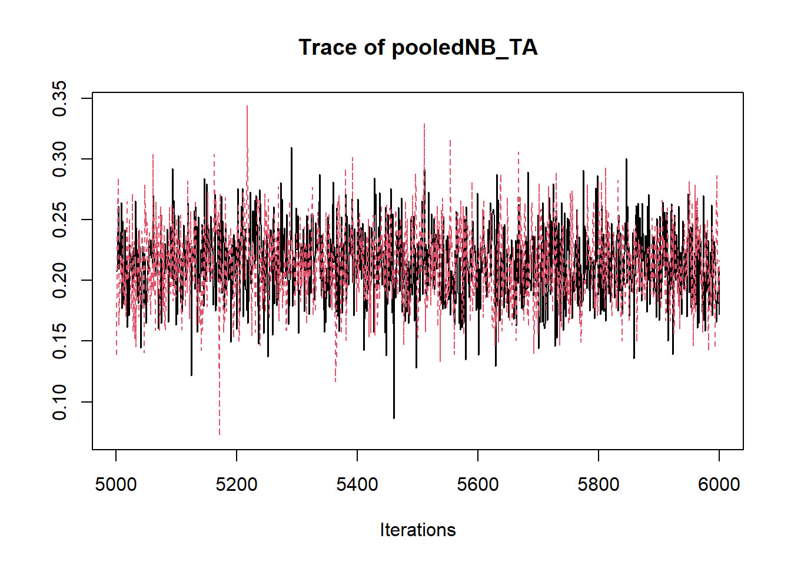
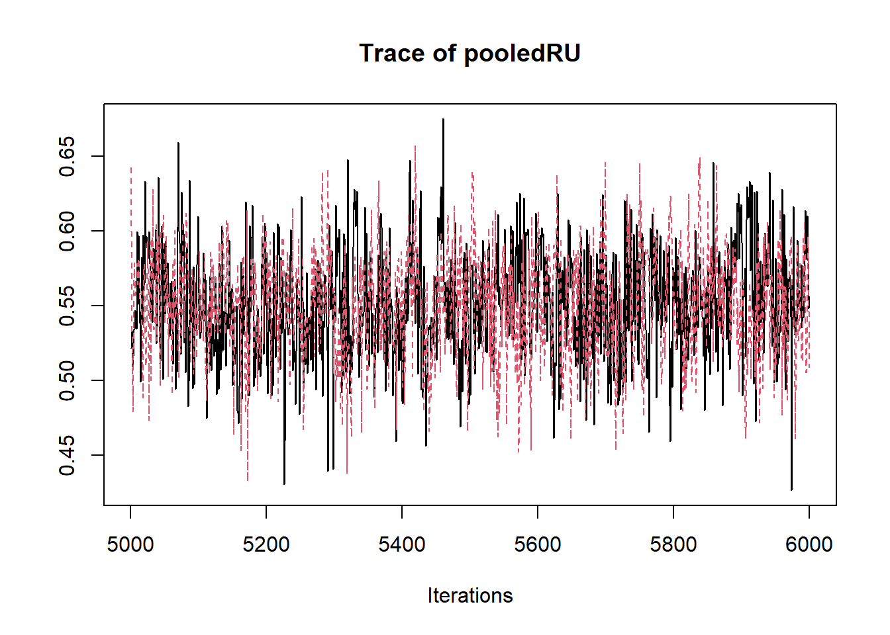
By default, we run two chains. When examining a trace plot, we look for the following:
The chains fluctuate around a stable level without obvious trends.
The chains overlap substantially and explore the same range of values.
There are no long periods where one chain stays in a very different range than the other.
If the chains appear to mix well and fluctuate in a similar range, we typically consider convergence to be adequate. If the chains remain separated or show strong trends, this indicates they fail to converge, and we may consider increasing the number of iterations or burn-in.
2.3 Posterior summaries
After checking that the chains have mixed well, we summarise the posterior distributions of the quantities we care about. The function summarize_tri_ma() provides a convenient summary of the fitted trivariate meta-analysis.
It can compute summary statistics for specified metrics (for example, net benefit NB, relative utility RU, probability of clinical usefulness in a new setting probuseful, sensitivity sens, and specificity spec) and can also include per-study metrics if desired. For NB, RU, probuseful, sens, and spec, the function returns the family of per-study, pooled, and predictive quantities. By default, the function returns the pooled and their credibility intervals and predictive quantities, and per-study estimates (only available for NB, RU, sens and spec). We just give the fit of fit$samples to the function, and the data frame we also fed to the model fitting function, and specify the label columns to be included in the per-study summaries if we want the per-study summaries. We specify the metrics we want to summarize in metrics, and which of those metrics we want to include per-study estimates for via per_study_metrics. The function returns a list with the summary statistics for the specified metrics, and the per-study estimates. By default, the function returns only the summary statistics for the pooled and predictive quantities, and does return the per-study estimates. If we don’t want them, we set include_per_study = FALSE. For NB, $NB$pooled contains $NB$pooled$model (the posterior Mean, Median, 95% credible interval lower and higher bounds Low and High for the pooled net benefit of the model), $NB$pooled$treat_all (the posterior Mean, Median, 95% credible interval lower and higher bounds Low and High for the pooled net benefit for the treat all strategy), and $NB$predictive contains $NB$predictive$model (the predictive posterior for a new setting - 95% predictive interval lower and higher bounds Low and High) and $NB$predictive$treat_all (the predictive posterior for the treat all strategy - 95% predictive interval lower and higher bounds Low and High). The pattern is similar for RU, sens and spec. In addition, the posterior probability that the model is useful in a new setting is returned in $probuseful in $probuseful$value.
summarize_tri_ma(
fit,
data = data_ADNEXCA125,
label_cols = c("Publication", "Country", "N", "Prev"),
metrics = c("NB", "RU", "probuseful", "sens", "spec"),
per_study_metrics = c("NB", "RU", "sens", "spec"),
return_known = FALSE,
include_per_study = FALSE)$NB
$NB$pooled
$NB$pooled$model
Mean Median Low High
0.2569539 0.2565852 0.2044101 0.3113704
$NB$pooled$treat_all
Mean Median Low High
0.2135226 0.2138483 0.1551646 0.2729613
$NB$predictive
$NB$predictive$model
Low High
0.04329603 0.64470586
$NB$predictive$treat_all
Low High
-0.03566838 0.64847953
$RU
$RU$pooled
$RU$pooled$model
Mean Median Low High
0.5512603 0.5516719 0.4782521 0.6214226
$RU$predictive
$RU$predictive$model
Low High
-0.1536934 0.7828643
$probuseful
$probuseful$value
[1] 0.952
$sens
$sens$pooled
$sens$pooled$model
Mean Median Low High
0.9390316 0.9394272 0.9216760 0.9547150
$sens$predictive
$sens$predictive$model
Low High
0.7854970 0.9837674
$spec
$spec$pooled
$spec$pooled$model
Mean Median Low High
0.7768364 0.7772834 0.7349419 0.8161234
$spec$predictive
$spec$predictive$model
Low High
0.4710598 0.9290423 If we specify include_per_study = TRUE (which is the default), the function also returns the per-study estimates for the specified metrics. For example, if we want to include per-study estimates for NB, we can run the following code and use $NB$per_study to extract the per-study summary data frame. The first few columns of the per-study summary data frame are the label columns specified in label_cols which contain study information we want to be displayed, and the remaining columns are the summary statistics for the per-study estimates of NB (mean, median, 95% credible interval lower and higher bounds). Note that per-study estimates are only available for NB, RU, sens, and spec, and not for other parameters such as pooledprev.
summarize_tri_ma(
fit,
data = data_ADNEXCA125,
label_cols = c("Publication", "Country", "N", "Prev"),
metrics = c("NB", "sens"),
per_study_metrics = c("NB", "sens"),
return_known = FALSE,
include_per_study = TRUE)$NB$per_study Publication Country N Prev Mean Median
1 Araujo (2017) Brazil 131 0.51908397 0.46534217 0.46585809
2 Chen (2022) Taiwan 281 0.20640569 0.17530689 0.17468766
3 Diaz (2017) Venezuela 227 0.29955947 0.26381418 0.26300221
4 He (2022) China 620 0.35161290 0.30405566 0.30411186
5 Jeong (2020) South Korea 54 0.18518519 0.16465680 0.16058023
6 Joyeux (2016) France 284 0.10563380 0.08346071 0.08257544
7 Lai (2022) China 734 0.23160763 0.20679585 0.20675310
8 Lam Huong (2022) Vietnam 461 0.14099783 0.12097400 0.12068236
9 Nam (2021) South Korea 353 0.03682720 0.02369282 0.02266296
10 Peng (2021) China 224 0.46875000 0.42252088 0.42153547
11 Poonyakanok (2021) Thailand 357 0.17086835 0.15364736 0.15345960
12 Qian (2021) China 486 0.24691358 0.21021466 0.21034661
13 Sandal (2018) Turkey 191 0.27748691 0.24105048 0.24051021
14 Tug (2020) Turkey 285 0.09122807 0.07224846 0.07133994
15 Viora (2020) Italy 577 0.24956672 0.20706438 0.20687770
16 Yang (2022) China 376 0.31117021 0.26957817 0.26976027
17 Zhang (2022) China 282 0.36879433 0.32453955 0.32456342
18 Pelayo (2023) Spain 122 0.33606557 0.29725939 0.29640453
19 Wang And Yang (2023) China 445 0.40449438 0.36879850 0.36851620
20 Szubert (2016) Poland 204 0.34313725 0.30492085 0.30434488
21 Szubert (2016) Spain 123 0.27642276 0.24512227 0.24313927
22 Sayasneh (2016) UK, Italy 610 0.29836066 0.26422777 0.26387776
23 Meys (2017) Netherlands 326 0.35276074 0.31670468 0.31574524
24 Van Calster (2020) Sweden 278 0.25899281 0.21341110 0.21329761
25 Van Calster (2020) Italy 354 0.48022599 0.44189163 0.44213881
26 Van Calster (2020) Greece 360 0.18055556 0.13049317 0.12937647
27 Van Calster (2020) Belgium 202 0.46039604 0.42070951 0.42096971
28 Van Calster (2020) Belgium 211 0.20853081 0.17799668 0.17767130
29 Van Calster (2020) Italy 286 0.55944056 0.52913001 0.52913338
30 Van Calster (2020) Sweden 239 0.56066946 0.51086854 0.50971373
31 Van Calster (2020) Italy 145 0.49655172 0.45217626 0.45306849
32 Van Calster (2020) Italy 121 0.20661157 0.17407364 0.17237695
33 Van Calster (2020) Poland 41 0.41463415 0.33888980 0.33738026
34 Van Calster (2020) Spain 54 0.50000000 0.44502343 0.44354179
35 Van Calster (2020) Italy 48 0.31250000 0.26989976 0.26683913
36 Van Calster (2020) Italy 58 0.72413793 0.64089512 0.64159947
37 Van Calster (2020) UK, Italy 92 0.09782609 0.08028746 0.07750538
Low High
1 0.379130933 0.54503651
2 0.132623103 0.22426005
3 0.208685565 0.32262220
4 0.268760026 0.34067863
5 0.082216332 0.26487655
6 0.052424950 0.11891285
7 0.179715742 0.23611531
8 0.091749713 0.15177673
9 0.004893829 0.04712327
10 0.358939785 0.48644432
11 0.116303438 0.19347401
12 0.172398263 0.24708709
13 0.179629548 0.30570850
14 0.043165368 0.10725807
15 0.173835775 0.24083140
16 0.221835644 0.31452852
17 0.270538078 0.38251125
18 0.219117227 0.38147775
19 0.323213973 0.41855895
20 0.246967069 0.36940070
21 0.173444474 0.32822127
22 0.229216976 0.30199439
23 0.266947567 0.37295957
24 0.164726335 0.26582887
25 0.389645039 0.49541553
26 0.093469765 0.17070735
27 0.346795107 0.49166591
28 0.126219360 0.23335276
29 0.468358850 0.58912372
30 0.444388953 0.57767174
31 0.367749085 0.53282456
32 0.111379974 0.24600229
33 0.210671171 0.47870419
34 0.324943860 0.57777741
35 0.165284264 0.38685825
36 0.520533803 0.75151686
37 0.034289846 0.13678345For parameters that don’t have a family specification:
summarize_tri_ma(
fit,
data = data_ADNEXCA125,
metrics = c("pooledprev"),
return_known = TRUE)$pooledprev
$pooledprev$scalar
Mean Median Low High
0.2921704 0.2924634 0.2396482 0.3456652 fit with known
summarize_tri_ma(
fit,
data = data_ADNEXCA125,
metrics = c("NB"),
per_study_metrics = c("NB"),
include_per_study = FALSE,
return_known = TRUE)$NB
$NB$pooled
$NB$pooled$model
Mean Median Low High
0.2569539 0.2565852 0.2044101 0.3113704
$NB$pooled$treat_all
Mean Median Low High
0.2135226 0.2138483 0.1551646 0.2729613
$NB$predictive
$NB$predictive$model
Low High
0.04329603 0.64470586
$NB$predictive$treat_all
Low High
-0.03566838 0.64847953 2.4 Forest plots
plot_forest(
fit$samples,
data = data_ADNEXCA125,
label_cols = c("Publication", "Country", "N", "Prev"),
prev_col = "Prev",
metric = "NB",
# center = "Median",
xlim = c(-0.1, 0.7),
file_png = "forest_nb.png",
file_pdf = "forest_nb.pdf"
)Using center = 'Median' (default). Set center = 'Mean' if desired.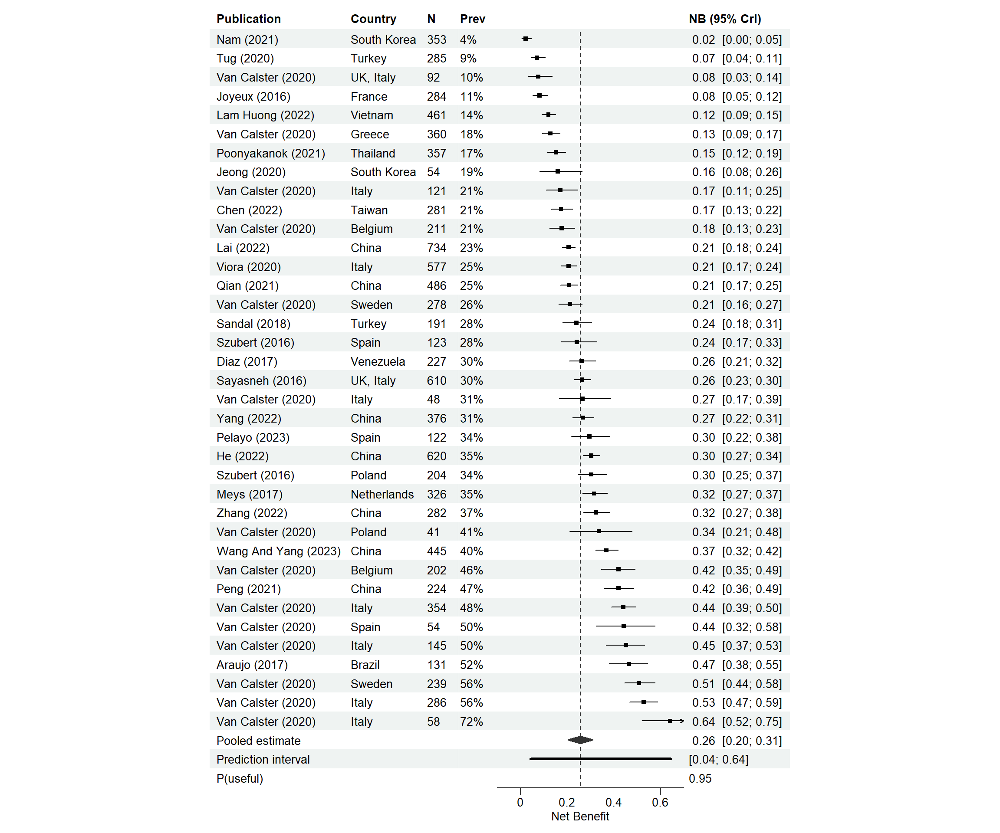
2.5 Compare results with different priors
2.5.1 Get details on the priors used
fit$prior_type[1] "weak"fit$priors_used_tibble# A tibble: 15 × 2
prior value
<chr> <chr>
1 mu_etap 0
2 tau_etap 0.001
3 mu_lambdasens0 0
4 tau_lambdasens0 0.001
5 mu_lambdaspec0 0
6 tau_lambdaspec0 0.001
7 mu_zss -0.2
8 tau_zss 4
9 mu_zsp -0.2
10 tau_zsp 4
11 a_csp -0.99
12 b_csp 0.99
13 tau_varprev 0.25
14 tau_varsens 0.25
15 tau_varspec 0.25 3 Extension: Value of information, EVPI metrics
voi_res <- MA_NB_tri_voi(
data_ADNEXCA125,
tp = tp, tn = tn, n_event = n_event, n_nonevent = n_nonevent,
prior_type = "weak",
t = 0.1,
auto_resample = TRUE
)
options(scipen = 999)
glimpse(voi_res$diagnostics)Compiling model graph
Resolving undeclared variables
Allocating nodes
Graph information:
Observed stochastic nodes: 111
Unobserved stochastic nodes: 3125
Total graph size: 27249
Initializing model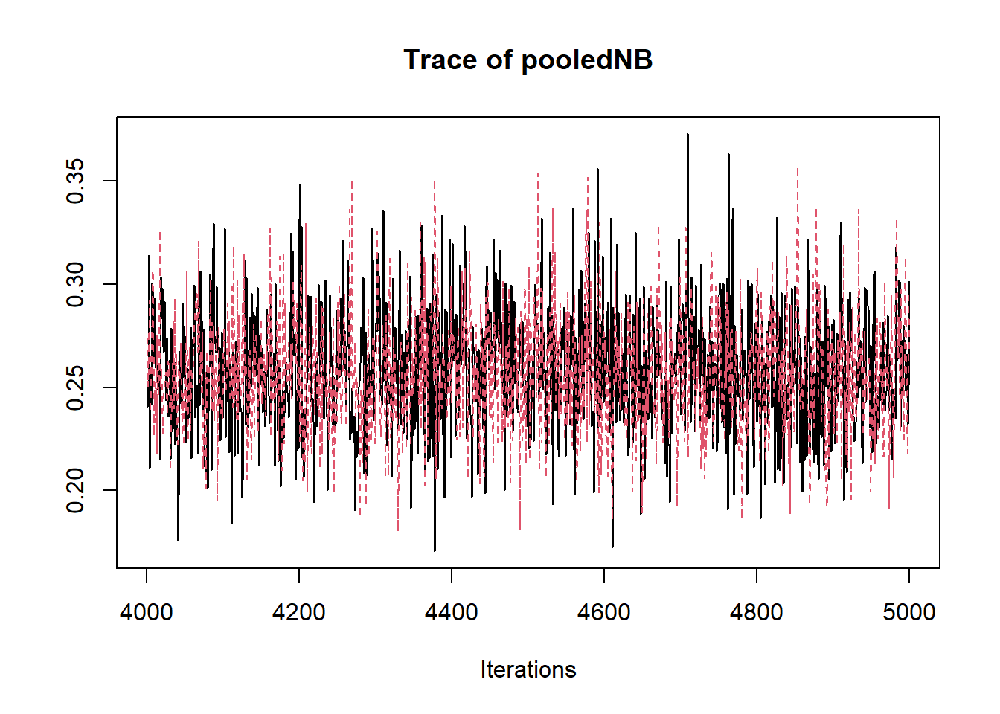
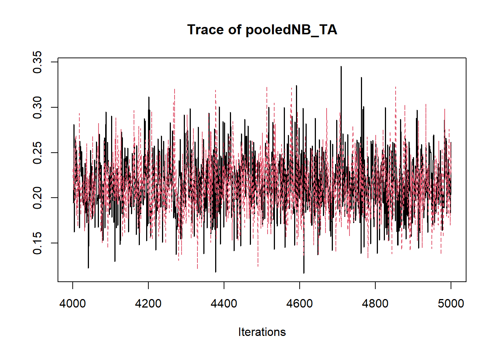
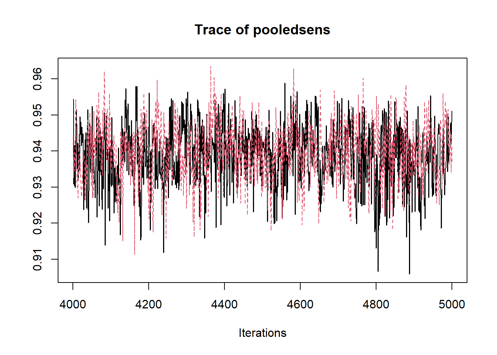
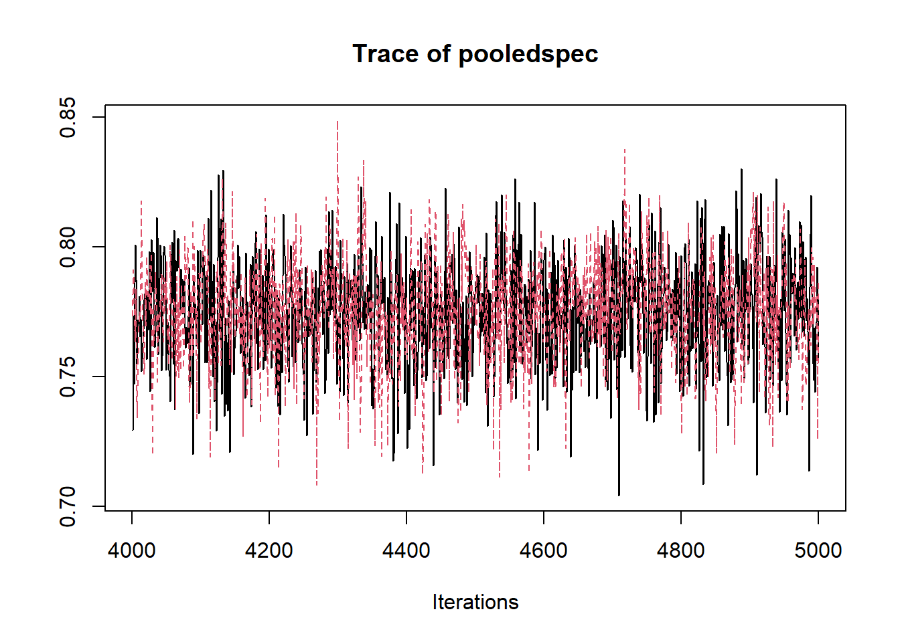
Rows: 1
Columns: 14
$ n_draws <int> 4000
$ winner_strategy <chr> "model"
$ sigma_strategy <dbl> 111.1527
$ sigma_evpi_cluster <dbl> 7.450071
$ sigma_evpi_pop <dbl> Inf
$ sigma_min <dbl> 2
$ ess_min <dbl> 400
$ ess_pooledNB <dbl> 3516.086
$ ess_pooledNB_TA <dbl> 3516.24
$ ess_probuseful <dbl> 4000
$ needs_more_sampling <lgl> FALSE
$ rounds <dbl> 1
$ total_draws <int> 4000
$ stop_reason <chr> "diagnostics_passed"glimpse(voi_res$metrics)Rows: 1
Columns: 8
$ NB_currentinfo <dbl> 0.2809109
$ NB_cluster_perfectinfo <dbl> 0.281592
$ EVPI_cluster_perfectinfo <dbl> 0.0006810765
$ NB_population_perfectinfo <dbl> 0.2795172
$ EVPI_population_perfectinfo <dbl> 0
$ NB_cluster_partialprev_pi <dbl> 0.2810904
$ EVPPI_cluster_perfectprevalenceinfo <dbl> 0.0001794323
$ diff_modelvsTA <chr> "Pooled (mean [2.5%, 97.5%]): 0.04…